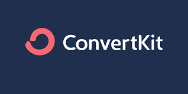
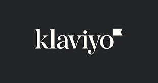

Email marketing remains a vital component of successful digital marketing strategies. In this article, we will explore and evaluate five of the top email marketing tools in 2023. By examining their key features, capabilities, and integrations, you can make informed decision on which tool best aligns with your business objectives.

Write engaging and relevant email content that provides value to your subscribers. This could include information about new products or services, discounts, educational content, company updates, or industry insights. Focus on delivering content that aligns with your subscribers' interests and needs.
1. Mailchimp
- Email Automation:
Mailchimp provides robust automation capabilities, allowing users to create personalized workflows, segment subscribers based on behavior, and send targeted emails.
- Segmentation:
The platform offers advanced segmentation options, enabling precise audience targeting based on demographics, preferences, or past interactions.
- A/B Testing:
Mailchimp facilitates A/B testing, making it easy to experiment with different subject lines, content, or designs to optimize campaign performance.
- Analytics:
The platform provides in-depth analytics, including open rates, click-through rates, conversion tracking, and audience engagement metrics, to measure campaign effectiveness.
Mailchimp seamlessly integrates with various marketing tools, including CRM systems, e-commerce platforms, social media, and landing page builders.
2. ConvertKit
- Overview:
ConvertKit is a powerful email marketing tool specifically designed for creators and bloggers. It emphasizes simplicity, automation, and audience segmentation.
- Email Automation:
ConvertKit offers robust automation capabilities, allowing users to create personalized email sequences, drip campaigns, and tag-based workflows.
- Segmentation:
The platform provides flexible and customizable segmentation options, enabling users to target specific groups of subscribers based on tags and behaviors.
- A/B Testing:
ConvertKit simplifies A/B testing, enabling users to compare different email variations and determine the most effective elements for their audience.
- Analytics:
ConvertKit offers basic analytics to track open rates, click-through rates, and subscriber growth, providing insights into campaign performance.
While ConvertKit's integration options are more limited compared to other platforms, it does support integrations with popular tools like WordPress and Shopify.
3. Klaviyo
- Overview:
Klaviyo is a powerful email marketing tool known for its advanced segmentation capabilities, personalization features, and deep integrations with e-commerce platforms.
- Email Automation:
Klaviyo offers sophisticated automation workflows, allowing users to deliver highly personalized, behavior-triggered emails based on customer interactions and preferences.
- Segmentation:
Klaviyo excels in segmentation, enabling businesses to create precise audience segments based on demographics, purchase behavior, browsing history, and more.
- A/B Testing:
The platform provides A/B testing functionality to test different subject lines, email content, and calls to action to optimize campaign performance.
- Analytics:
Klaviyo offers robust analytics, providing insights into key metrics like open rates, click-through rates, revenue generated, and customer lifetime value.
Klaviyo seamlessly integrates with leading e-commerce platforms like Shopify, WooCommerce, Magento, and others, enabling powerful data synchronization and personalized customer experiences.
4. Campaign Monitor
- Overview:
Campaign Monitor is a user-friendly email marketing tool that offers a combination of ease of use and powerful features for businesses of all sizes.
- Email Automation:
Campaign Monitor provides an intuitive visual automation builder, making it easy to create automated workflows and personalized customer journeys.
- Segmentation:
The platform offers advanced segmentation options, allowing users to target specific subscriber segments based on custom fields, past purchases, or interactions.
- A/B Testing:
Campaign Monitor supports A/B testing, allowing users to experiment with different email variations and optimize their campaigns for better results.
- Analytics:
Campaign Monitor provides detailed campaign analytics, including open rates, click-through rates, conversions, and revenue tracking, helping users measure their email campaign performance.
Campaign Monitor offers integrations with various marketing tools, CRM systems, content management systems, and e-commerce platforms.
5. HubSpot Email Marketing
- Overview:
HubSpot Email Marketing is part of the all-in-one HubSpot marketing automation platform, offering a comprehensive suite of tools for email marketing and lead nurturing.
- Email Automation:
HubSpot Email Marketing provides powerful automation capabilities, enabling users to create personalized workflows, nurture leads, and send targeted emails.
- Segmentation:
The platform offers robust segmentation options, allowing users to create dynamic lists based on contact properties, behaviors, or interactions.
- A/B Testing:
HubSpot Email Marketing includes A/B testing functionality, enabling users to experiment with different email elements and measure their impact on engagement and conversions.
- Analytics:
HubSpot provides detailed email analytics, offering insights into email performance, engagement metrics, and conversions, while also allowing integration with the broader HubSpot CRM and analytics tools.
HubSpot Email Marketing seamlessly integrates with other HubSpot tools, including CRM, landing page builders, forms, and marketing automation workflows.
Consider your specific business requirements, budget, ease of use, scalability, and integration needs to determine which tool aligns best with your email marketing goals.
After reviewing these top email marketing tools, it's clear that each platform offers unique features and strengths. Take advantage of free trials, demos, and user reviews to evaluate the platforms and make an informed decision. With the right email marketing tool in hand, you can optimize your campaigns, drive engagement, and foster long-lasting relationships with your audience.